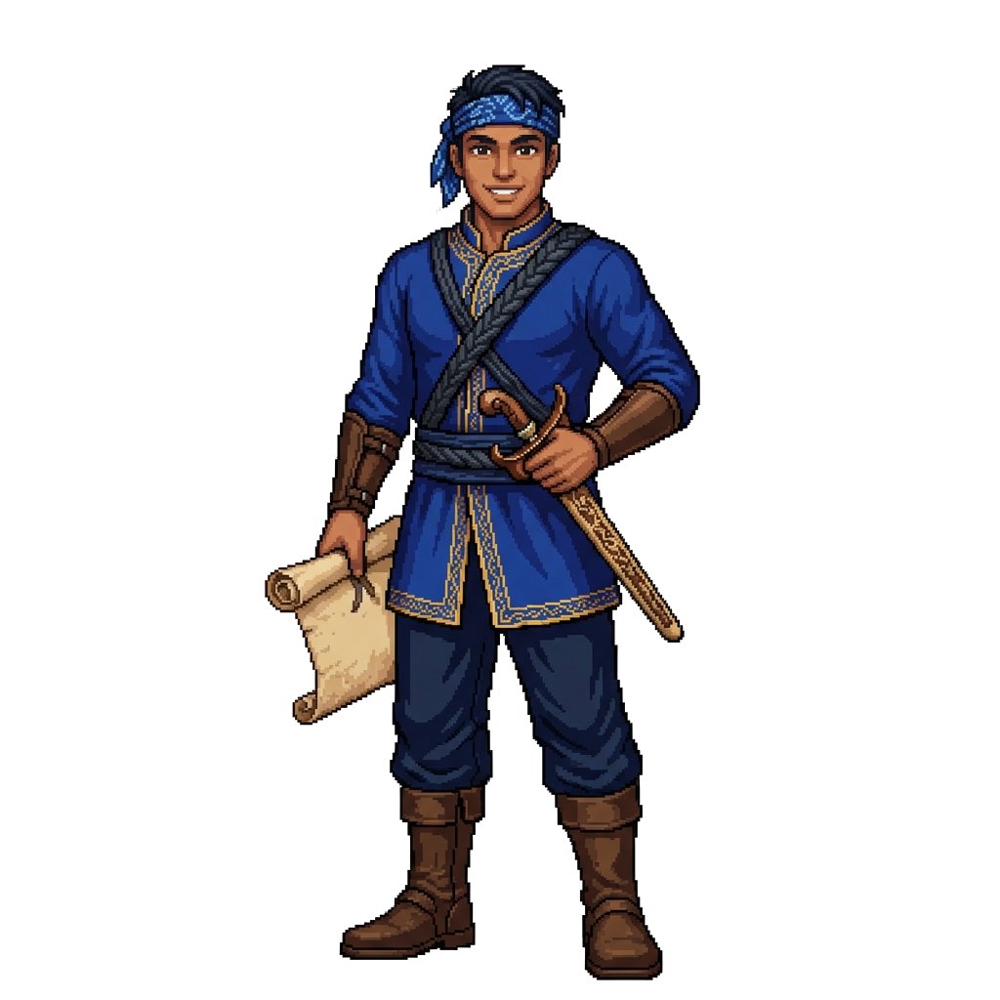

KESULTANAN BANJAR
Lewati Intro
Menu
Artefak
Suara: AKTIF
Beranda
PENJAGA LEMBARAN
UJIAN SEJARAH BANJAR
❖ ✦ ❖

LORA — PEMANDU SEJARAH
Ketuk untuk melanjutkan...
MULAI UJIAN
Soal 1 dari 5
0 Poin
Kategori
Memuat pertanyaan...
Artefak Baru Ditemukan!
LANJUT
UJIAN SELESAI!
TOTAL SKOR
0
0/5
Tepat Percobaan Pertama
0%
Akurasi
MAIN LAGI
LIHAT ARTEFAK
Arsip Artefak Sejarah
Kumpulkan artefak dengan menjawab pertanyaan secara tepat.
TUTUP